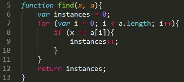
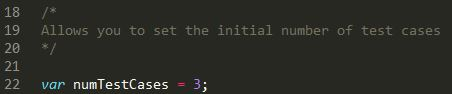
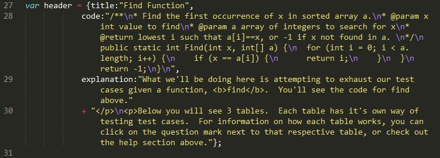
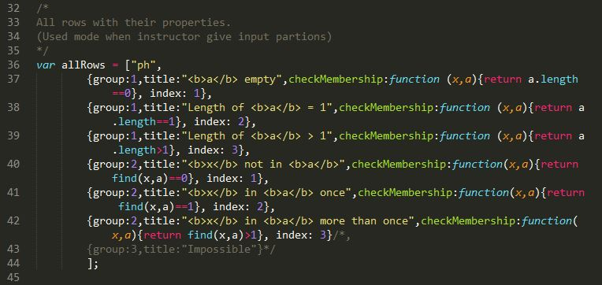
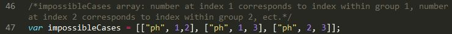
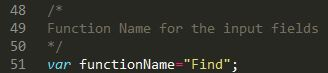
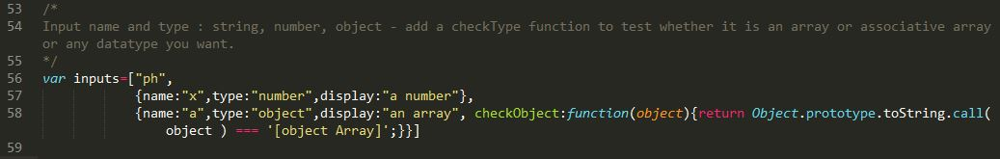
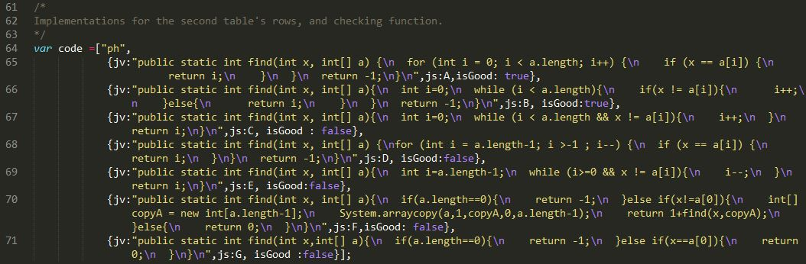

JUnit Tables
Click on the tabs below to find out how each table works.
Below you'll see information that applies to all tables. If you'd like to learn more about a specific table, click on one of the pills at the very bottom
For each of the tables, you will be working with test cases. If you'd like to add more test case columns for your input, click on the New Column button at the top left corner of the table
If you'd like to delete a test case column that you don't need, hover over the area to the right of your test case and a delete button will show


When you look at the sum mode table, you'll see a column to the left containing partitions for the given function, and a row on top with the same function, but with blank fields
You're job is to fill out the fields in the first row, so that all the partitions on the left are covered
When you fill out a test case in a certain column, click on the bubble that corresponds to the row of the test case you are covering
Every test case you input should cover one row in each group of the table. For example if the table is broken up into 2 groups, each test case should cover 2 rows

In sum mode, you simply need to have every row covered, not every possible combination of rows

Product mode operates similar to Sum mode, in that you will still be filling out test cases in the first row to cover the table
What's different about sum mode is that you will now need to cover every possible combination of test cases. For example, if you are given 3 partitions with 3 cases to cover in each partition, you will need 27 cases to cover every possible combination
To make this more clear, you will see a list on the right side of the table containing all the possible test cases. Fill out the table in the middle with all the test cases that are possible.
However, some test cases that are presented in the list will be impossible. If there is a certain test case you don't think you can cover, click on the bubble in the list under "Mark as Impossible"
Make sure you cover all the possible test cases in the table in the middle, and for everything else, mark that as impossible in the list on the right. Make sure you cover all the cases!
In the last table, you will be reviewing code that we give you
On the left side of the table, you'll see different versions of code for the given function. Some of these versions are good implementations, while some are not
What makes a piece of code a good implementation is that it does not have a test case that refutes it
Below you'll see all the tags you need to include at the head of your project:
<script src="http://code.jquery.com/jquery-1.10.1.min.js"></script> <script src = "js/bootstrap.min.js"></script> <script src = "AllData_Find.js"></script> <script src="http://d3js.org/d3.v3.min.js" charset="utf-8"></script> <script src ="setHeader.js"></script> <script src = "JUnitTables.js"></script> <script src = "JUnitDemo.js"></script> <script src="googlePrettify/run_prettify.js" type="text/javascript"></script> <link href = "css/bootstrap.css" rel = "stylesheet"></link> <link href = "JUnitTables.css" rel = "stylesheet"></link> <link href="googlePrettify/prettify.css" type="text/css" rel="stylesheet">
If you'd like to place tables at specific locations on your page, make a div at that location, with a class depending on what table you want. You'll see an example for each table below:
Sum Table:
<div class = 'JUnitTable1'></div>
Product Table
<div class = 'JUnitTable1Prod'></div>
Code Review Table
<div class = 'JUnitTable2'></div>
Here you can learn how to take full advantage of using this widget in your website
By default, we provide you with a find function and give functionlity to all the tables by allowing them to check if certain specs meet the requirements for this function
However, you can use your own functions as well if you would like. If you'd like to change the function being used in the tables, navigate to the AllData_Find.js file and open it up in your text editor.
You'll see that it's been named after the function we used in our demo. When changing the data in this file, make sure to make a copy of this file, but name it after the file you are using
How to appropriately change the AllData file
-
The first thing you'll see is a javascript version of the function we will be basing our tables around. It is adviced that you do the same, as it will make functionality much easier later in the AllData file
 -
The next thing to look for is the numTestCases variable. This defines how many columns we initially give the user. The user can always add or delete columns, but if you'd like to change the default amount, simply change the number
 -
Next you'll see a variable header. This variable represents what you see at the very top of the demo page: The function name, code for the function, and then a short description for the user.
If you change the values, make sure they are contained within quotes.
Change the value of the title key to change the main title of the page.
For the code key, the value is the code that we will show to the user for the function you will write. Write your code as usual, but for formatting, instead of pressing return for a new line, type \n. All your code should be on one line for this value
Finally, for explanation, the value is the short description that you will be giving to the user. Assume that the entire value will eventually be wrapped in <p></p> tags. Write the html for your description. If you don't know html or would rather not use it, feel free to just type your text, with a \n wherever you want a new line.
-
The next value you see the allRows array. This array contains information about the partitions for your table.
The first value of this array should always be "ph", as you can see above. Don't change this value.
The values you do want to worry about are the associative arrays that follow.
Each associative array contains 4 key-value pairs:
- group: The group that you want this particular partition to belong to. Currently the tables work up to a maximum of 2 groups.
- title: Information about this partition that will be displayed to the user in the tables. Make desciptions as short as possible.
- checkMembership: JavaScript functions that test the given partition. These functions return either true or false. Depending on what function you are using, each of these checkMembership functions will vary. Look at the code above for our find function as an example.
- index: Refers to what partition we are looking at within each group. The first partition for a group must have an index of 1, and each new partition has an index of one more than the index of the previous partition. If you start a new group, the index of the first partition in this group is 1.
-
Next is the impossibleCases array. This array contains other arrays, that represent cases that are impossible in product mode.
To create an array within impossibleCases that represents an impossible combination of partitions:
- The first element is always "ph"
- The next element is the index of the partition from group 1
- Next is the index of the partition from group 2
-
After impossibleCases, you'll see a variable functionName. As you might have guessed, this is simply the name of your function. We need this input for display purposes in the tables.
 -
Next is the variable inputs. Inputs is an array containing associative arrays with data about what the inputs of your function should be.
The first value is always "ph". DO NOT CHANGE THIS VALUE
Within each associative array, you can have 3-4 values:
- name: The variable name of this particular input for the function
- type: The JavaScript type of input; eg: number, string, object, ect.
- display: What we want to tell the user that this particular input is
- OPTIONAL - checkObject: a JavaScript function to check if the user typed in the correct type of input for this field. This is used for our error messages to the user
-
Next is the array code. Code contains an array of associative arrays with data for the code review table. Including the actual code displayed to the user, and whether or not that code is a good implementation
TEach associative array contains 3 key-value pairs:
- jv: This is the code that you will be displaying to the user. Write all the code on one line. For formatting, when you want to start a new line, type \n.
- js: Represents the choice letter. Start with A and then continue along the alphabet for each new code example
- isGood: true if the code example is good, false otherwise
-
goodFunction is simply a version of the code that you typed above that you think is the best, one that other codes should be compared to.
The value is the js value from the code variable of the code you think is best
-
Finally we have JavaScript versions of the code we typed for the user in code. To make a new JavaScript version of the code, make a new variable who's name is the js value from code. Next simply type the function you did before, but in JavaScript.
-
You're done editing!
Make sure you save the file you made with a new name corresponding to the function you are using in your tables. Then in the html for your project, reference your new file with a script tag.